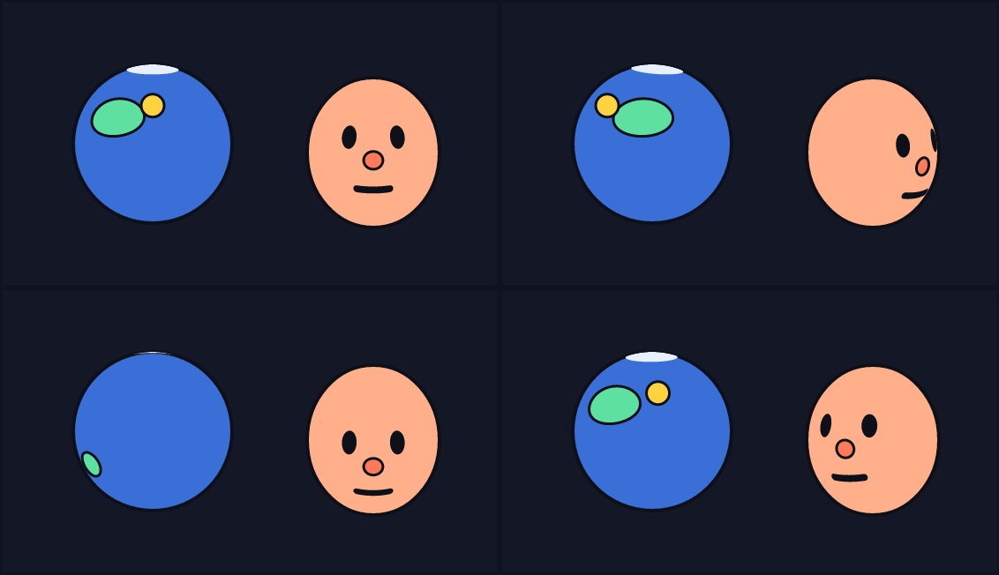
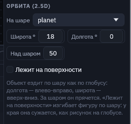
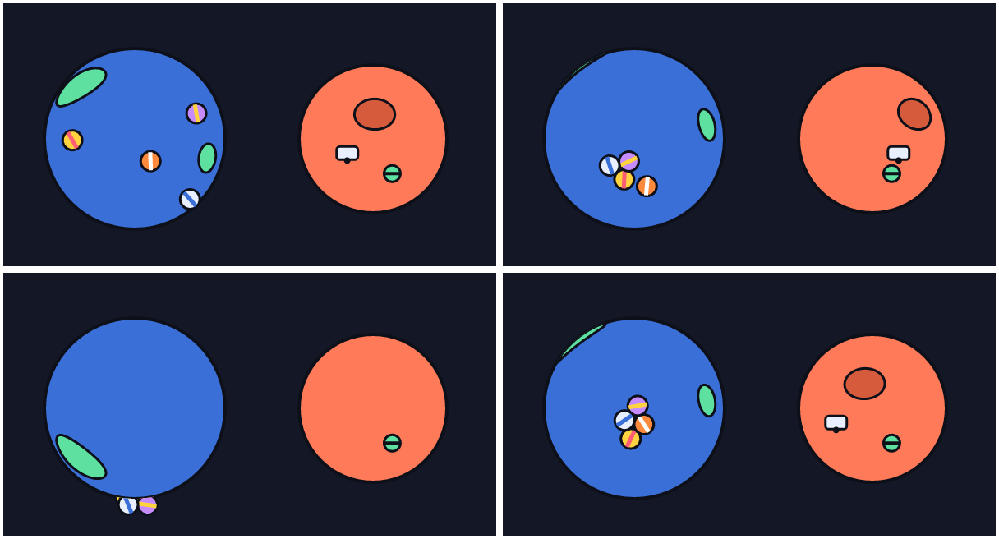
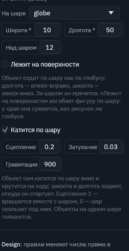
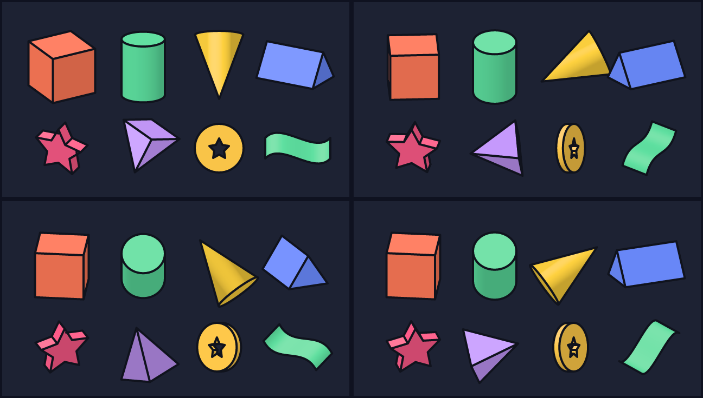
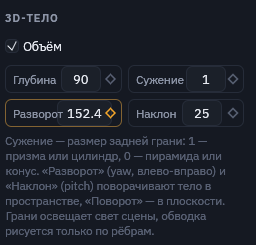

Орбиты 2.5D и 3D-тела
Объект можно положить на шар: широта и долгота задают, где он, а Motif сам считает, куда он попадёт на экране, когда уйдёт за край и спрячется за шаром. Шар можно поворачивать, и всё, что на нём лежит, поедет вместе с ним. Объекты остаются плоскими векторными фигурами, 3D-модели не нужны.

orbit.msc: планета крутится одним ключом yaw, луна облетает её и прячется сзади. Голова поворачивается и кивает ключами yaw и pitch, а глаза, нос и рот съезжают и сужаются сами.Как это работает
- Шар — любая фигура, обычно
ellipse. Его ширина и высота — радиусы, так что вытянутый эллипс работает как яйцо: голову можно сделать выше, чем шире. - Объект на шаре получает
on шар, широтуlat(вверх положительная, от −90 до 90) и долготуlon(вправо положительная).altподнимает его над поверхностью: так летают спутники. - Поворот шара:
yawкрутит его влево-вправо вокруг вертикальной оси,pitchнаклоняет верх к зрителю. Все пять чисел ставятся на ключи и работают с пружиной (spring). - За шаром объект прячется: видна только та часть, что не закрыта шаром. Поэтому в скрипте объекты на шаре пишутся после него.
- Лежит на поверхности (
wrap): фигура не просто едет, а изгибается по шару. У края она сужается, а за краем уходит из вида, как рисунок на глобусе. Её собственный поворот и масштаб действуют вдоль поверхности. Обрезается она по контуру шара. - Позицию такого объекта задаёт шар: поля X и Y у него пересчитываются и не нужны.
Раздел «Орбита»

planet, широта 18, над шаром 50.| Поле | В скрипте | Что делает |
|---|---|---|
| На шаре | on planet | На какой фигуре лежит объект. |
| Широта | lat 20 | Вверх-вниз по шару, градусы. |
| Долгота | lon -30 | Влево-вправо по шару, градусы. 360 — полный круг. |
| Над шаром | alt 50 | Высота над поверхностью. |
| Лежит на поверхности | wrap | Изгибает фигуру по шару. |
| Поворот шара | yaw 30, pitch 10 | У шара: крутит всё, что на нём лежит. |
Рецепты
- Поворот головы. Голова — эллипс, глаза, нос и рот —
on head … wrap. Ключиhead.yawповорачивают её без перерисовки видов сбоку. - Вращающаяся планета. Пятна с
wrap, ключиplanet.yaw 0: 0 | 4: 360. - Спутник.
alt 50и ключи долготыmoon.lon 0: 0 | 4: 360. Наклон орбиты — через широту илиpitchшара. - Живее.
springна голове: поворот догоняется с лёгким перелётом.
Физика на шаре
Отметьте «Катится по шару» (roll) у объекта на шаре, и он сам покатится по нему туда, куда тянет гравитация сцены, крутясь на ходу. Гравитация поворачивается вместе с шаром: низ шара — там, где низ сцены, пока шар не наклонён. Наклоните шар ключами pitch, и всё на нём покатится в другую сторону. Широта и долгота задают, откуда объект стартует. Объекты на одном шаре толкают друг друга, группы катятся целиком.

rolling.msc в кадрах 0.6, 1.8, 3.2 и 5.0 с.
| Поле | В скрипте | Что делает |
|---|---|---|
| Катится по шару | roll | Объект катится по своему шару (нужен on). |
| Сцепление | roll 0.3 | Насколько вращающийся шар увлекает объект за собой: 1 — едет с шаром, 0 — шар скользит под ним. |
| Затухание | roll 0.3 0.05 | Как быстро гаснет качение, доля за кадр. |
| Вес | weight 1 | В разделе «Физика»: доля гравитации сцены. 0 — без тяжести. |
group m1 on globe lat 40 lon -40 alt 12 roll 0.2 0.03 { … }
group rover on planet roll 1 weight 0 { … }3D-тела
Любую плоскую фигуру можно выдавить в глубину: extrude 90 делает из квадрата куб, из круга цилиндр, из треугольника призму, из звезды печенье, из контура с дыркой — кольцо или монету. Второе число — сужение задней грани: extrude 120 0 даёт конус или пирамиду, 0.5 — усечённые. Тело поворачивается в пространстве ключами yaw (влево-вправо) и pitch (наклон), а rot по-прежнему поворачивает его в плоскости.

bodies.msc в кадрах 0, 0.7, 1.6 и 2.6 с: тела крутятся ключами yaw и pitch. Освещение граней идёт от света сцены (light 60: тени падают вниз-вправо, свет сверху-слева).- Рисуется векторными гранями. Грани, повёрнутые от зрителя, скрыты, остальные идут от дальних к ближним. На выходе по-прежнему вектор: его можно экспортировать, пикселизовать, запекать в спрайты.
- Свет сцены. Грани, повёрнутые к свету, светлее, от света — темнее. Свет задаёт
lightу артборда, тот же, что для теней и «Высоты». - Гладкие стенки цилиндра, конуса или волнистой ленты закрашиваются одним плавным переходом, без полос.
- Обводка рисуется только по настоящим рёбрам: по силуэту, по краю торцов и по острым углам контура. На гладкой стенке линий нет.
- Открытый контур (линия пером) выдавливается в ленту, видную с обеих сторон.
- Анимируется всё: глубина (
depth), сужение (taper),yaw,pitch. Выдавить можно и морфинг: тело меняет форму на ходу.

В редакторе это раздел «3D-тело» в панели свойств фигуры. Галочка «Объём» выдавливает фигуру на её ширину, дальше поля «Глубина», «Сужение», «Разворот» и «Наклон», все с ромбами ключей.
rect cube size 90 90 fill #ff7a59 stroke ink 4 extrude 90 yaw 30 pitch 25
ellipse cone size 90 90 fill #ffd23f extrude 120 0 pitch -100
anim Spin 4s loop {
cube.yaw 0: 30 linear | 4: 390
}Грани сортируются по глубине целиком, поэтому сложные невыпуклые тела под некоторыми углами могут перекрываться неточно. Перспективы нет: тела рисуются в изометрии, как в большинстве 2D-игр.
В скрипте
ellipse head at 420 170 size 150 170
ellipse eye size 18 24 on head lat 12 lon -22 wrap
ellipse moon size 26 on planet alt 50
anim Turn 2s {
head.yaw 0: 0 | 1: 50 | 2: 0
}Это не полное 3D: объекты перекрываются целиком, а не по точкам. Фигура на шаре прячется за ним, но два объекта, проткнутые друг через друга, будут выглядеть неверно. Перетаскивание объекта по шару мышью пока не сделано: меняйте широту и долготу в панели.